Aula 1 Introdução às Finanças Corporativas
1.1 Finanças corporativas e o administrador financeiro
O que são finanças corporativas?
Quais são os investimentos de longo prazo?
Quais ativos você deve adquirir?
Onde você conseguirá o financiamento de longo prazo?
Qual a estrutura de capital?
Capital próprio? Capital de terceiros?
Como administrar ativos e passivos de curto e longo prazos?
O administrador financeiro
CFO - Chief of Financial Office
Controla a Tesouraria - tesouraria, crédito, investimentos e planejamento financeiro
Controla a Controladoria - tributos, contabilidade de custos e financeira e TI
Figura 1.1: Quadro organizacional simplificado de uma empresa estadunidense
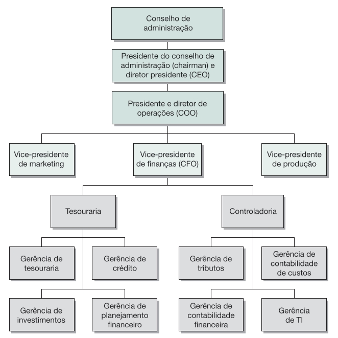
Fonte: (Ross et al. 2013i, pg.3)
Figura 1.2: Organograma da Petrobras S.A. (março de 2023)
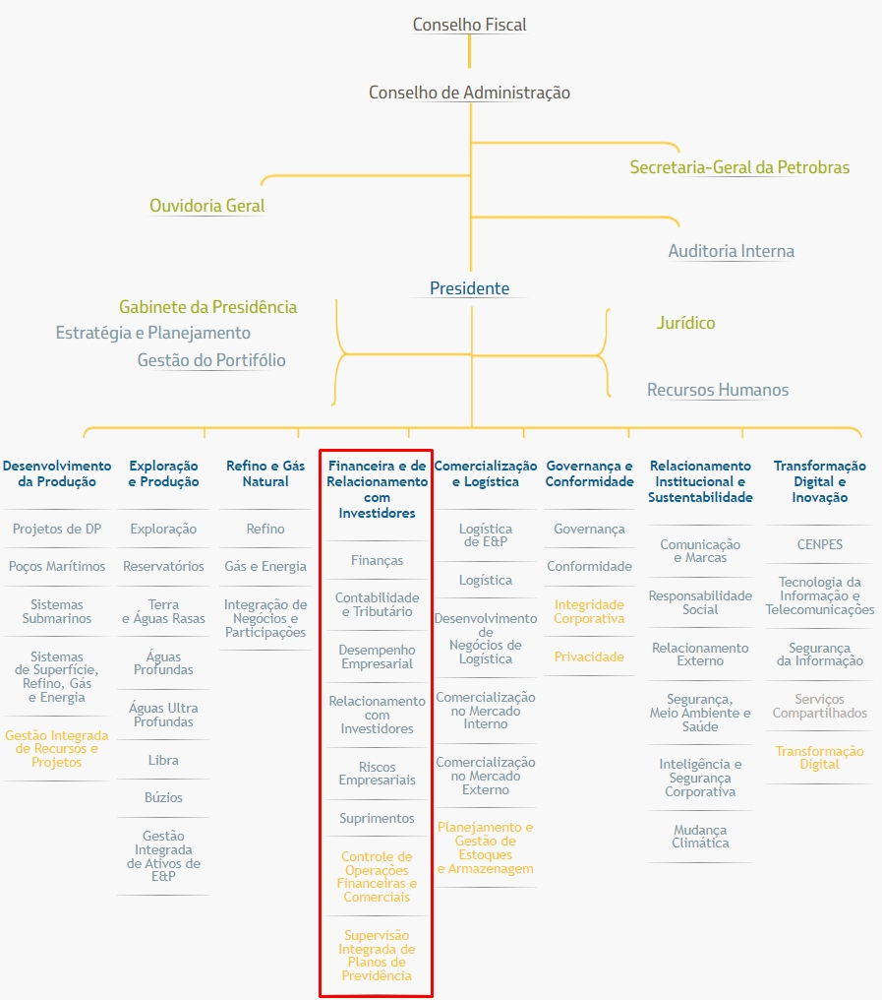
Fonte: (Petrobras, https://petrobras.com.br/pt/quem-somos/organograma/).
1.2 Decisões de administração financeira
1.2.1 Orçamento de Capital
Objetivo - identificar negócios em que o valor do fluxo de caixa gerado por um ativo deve exceder o seu custo de aquisição, “carregamento de estoques”, manutenção e despesas financeiras várias.
Fechar / Abrir uma outra loja?
Fechar / Reduzir / ampliar a capacidade instalada?
Mantes / Adquirir uma nova tecnologia?
Retirar / Adicionar um produto do mercado?
Adquirir um concorrente?
Avaliar o volume de recursos
Avaliar os rendimentos esperados
Avaliar o tempo, o tamanho e o risco dos fluxos de caixa
Figura 1.3: Segmentos de negócios da Vale em 2018
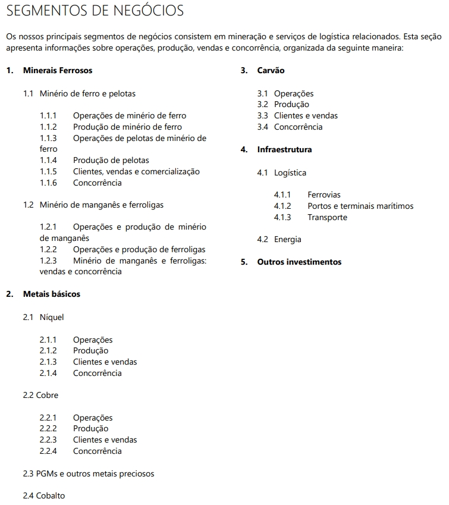
Fonte: (Vale 2018, pg.35)
Figura 1.4: Principais atividades dos segmentos operacionais da Vale em 2020
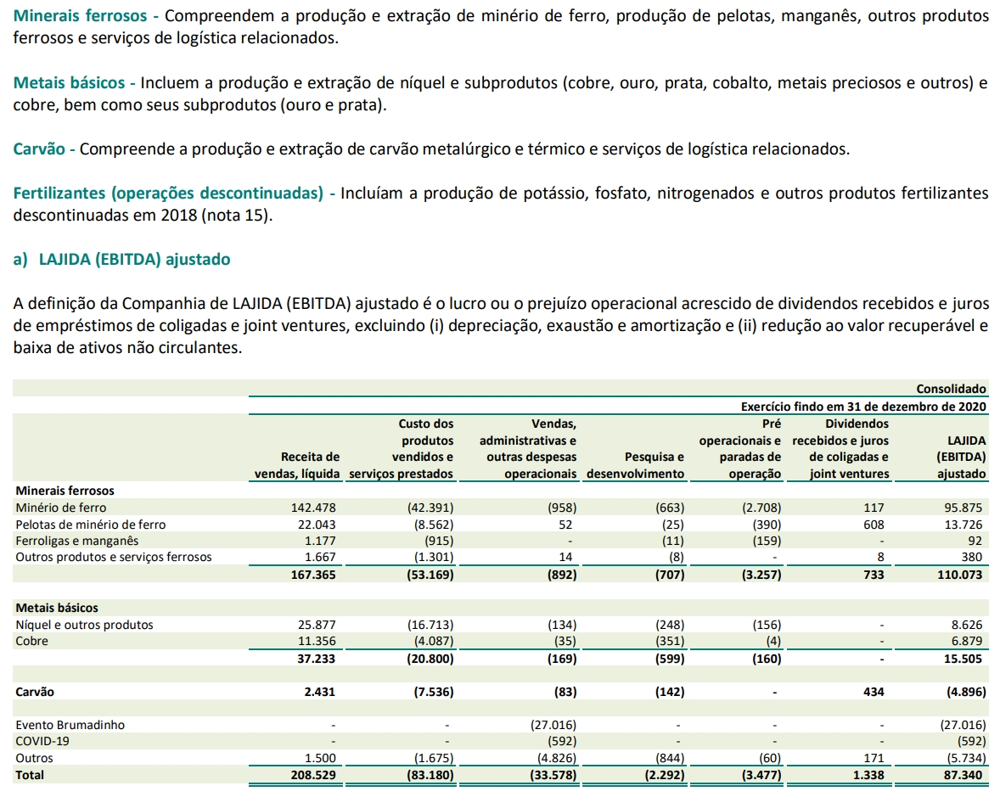
Fonte: (Vale 2020, pg.21)
Figura 1.5: Notas explicativas às Demonstrações Financeiras da Vale em 2020 (em milhões de reais)
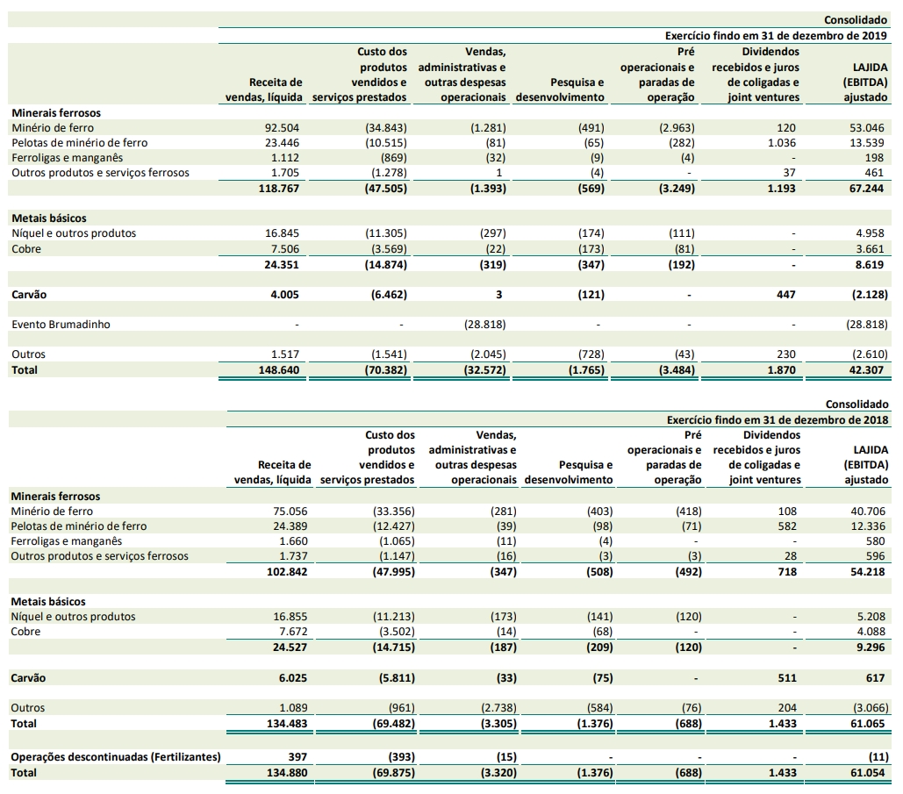
Fonte: (Vale 2020, pg.22)
Figura 1.6: Segmentos de atuação da BRF S.A. em 2020
Fonte: (BRF 2020)
Figura 1.7: Demonstrativo do Resultado do Exercício (DRE) da BRF S.A. em 2020
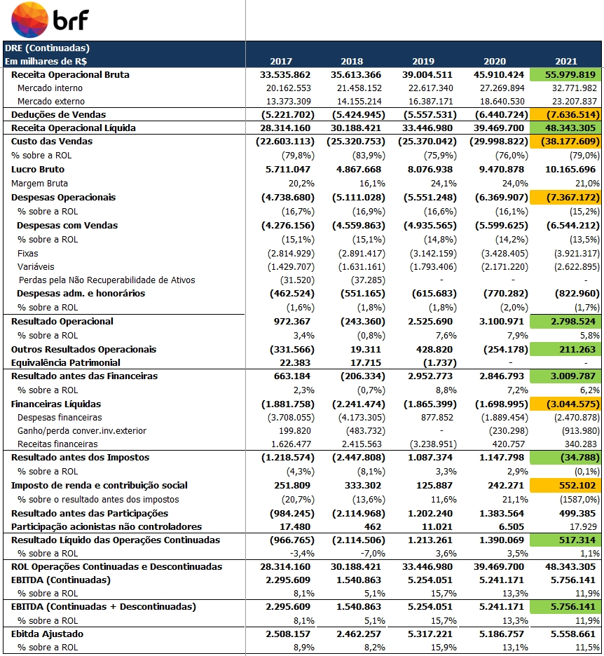
Fonte: (BRF 2020)
1.2.2 Estrutura de Capital
Como a empresa obtém e administra o financiamento?
Qual a combinação entre passivo e patrimônio líquido?
Quanto a empresa deve tomar emprestado?
Como a estrutura de capital afeta o risco?
Como a estrutura de capital afeta o valor da empresa?
Quais são as fontes baratas?
Como distribuir o endividamento entre as várias fontes?
Em que moeda deve tomar emprestado?
Qual o prazo?
Quais as garantias?
Qual a flexibilidade financeira?
Qual a liquidez no mercado?
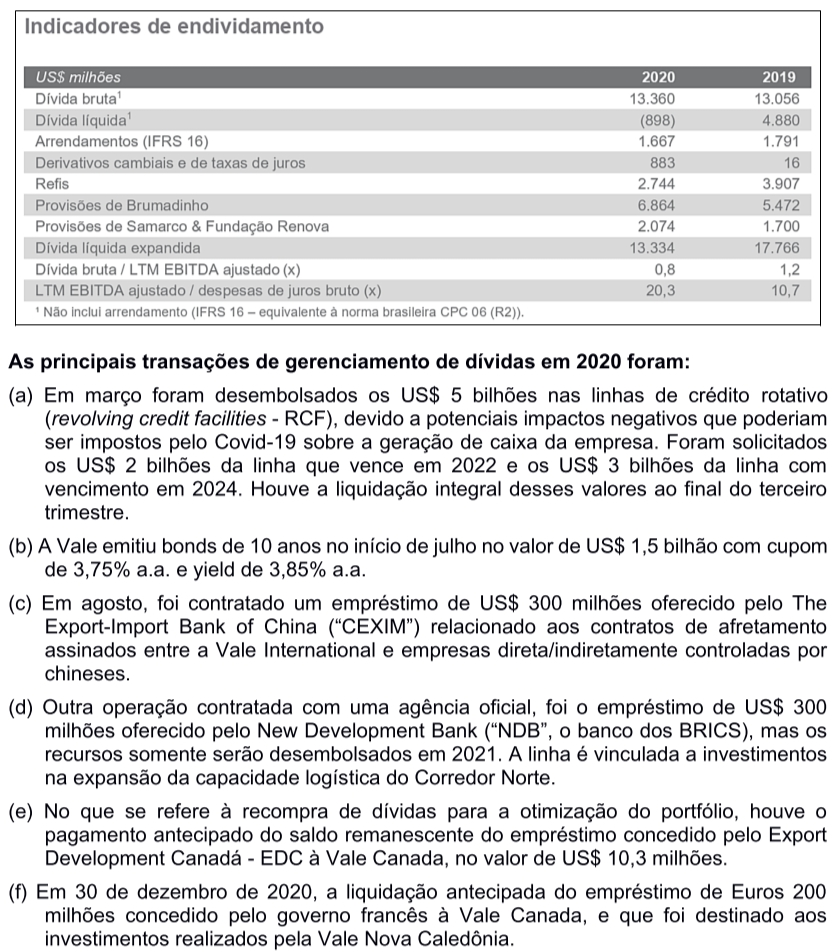
Figura 1.8: Balanço Patrimonial (BP) da BRF S.A. em 2020
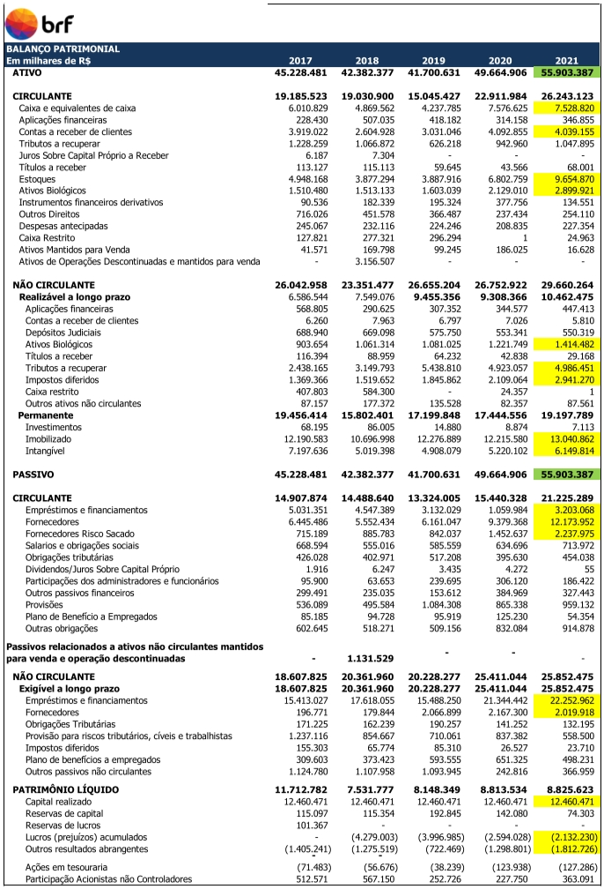
Fonte: (BRF 2020)
1.2.3 Administração do Capital Circulante
Capital circulante ou ativo circulante
Atividade diária
Combinar recursos da entrada e saída de caixa da empresa
Quanto de caixa e estoque deve ser mantido?
Comprar a crédito e vender a prazo?
Como combinar preços, riscos e prazos?
Quais as condições de venda?
Como obter o financiamento de curto prazo?
Como evitar problemas de liquidez no curto prazo?
1.3 Formas de Organização de Negócios
Microempreendedor Individual - MEI
Lei Complementar nº 128/2008 que alterou a Lei Geral da Micro e Pequena Empresa (Lei Complementar nº 123/2006) cria a figura do Microempreendedor Individual.
Para ser um MEI é necessário faturar até R$ 81 mil por ano, não ter participação em outra empresa como sócio ou titular e ter no máximo um empregado contratado que receba o salário-mínimo ou o piso da categoria.
O MEI será enquadrado no Simples Nacional e ficará isento dos tributos federais (Imposto de Renda, PIS, Cofins, IPI e CSLL).
Empresa Individual de Responsabilidade Limitada
Lei 12.441/2011
Sociedade
Um ou mais sócios
Organização descrita no contrato de sociedade
Sociedade em nome coletivo
A administração da sociedade é exclusiva dos sócios
Sociedade simples
Dois tipos de sócios: comanditário (delibera e fiscaliza) e comanditado (gestão)
Comanditário: sócio sem ingerência na gestão dos negócios
Sociedade limitada (LTDA)
Sócios/quotas e responsáveis pelo capital social
Administrador não sócio.
Sociedade por Ações (S.A. “Fechada”)
Sócio/Ações
Somente os acionistas podem administrar
O administrador responde subsidiária e ilimitadamente pelas obrigações da sociedade.
Sociedade Anônima ou Companhia (S.A. “Aberta”)
Sócio/Ações
Acionista tem sua obrigação limitada ao capital integralizado ao preço das ações.
Lei das Sociedades por Ações (Lei 6404/76)
Na forma de sociedade aberta, a separação entre propriedade e gestão é mais definida.
Companhia aberta – Sociedade por Ações de Capital Aberto
Pessoa Jurídica \(\neq\) Pessoa Física
Contratos e Estatutos
Acionistas e Conselheiros
Acionistas elegem conselheiros
Diretoria executiva supervisionada pelo Conselho de administração
Acionistas e administradores são grupos separados
Separação da propriedade e da gestão
Acionistas tem responsabilidade limitada pelas dívidas das empresas
Dupla tributação nos EUA? Não ocorre dupla tributação no Brasil!
Política de dividendos é exclusiva das corporações SA
Figura 1.9: Corporações internacionais
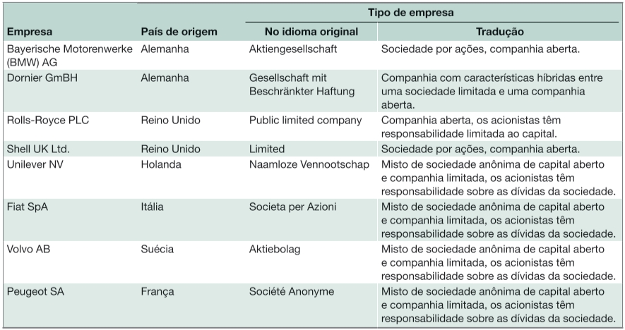
Fonte: (Ross et al. 2013i, pg.9)
1.4 O objetivo da administração financeira
Objetivos possíveis?
Minimizar custos – ok
Maximizar lucros - ok
Manter o crescimento dos lucros – ok, reduzir volatilidade
Sobreviver - ok
Evitar a falência - ok
Evitar problemas financeiros - ok
Superar a concorrência?
Maximizar taxa de lucro?
Maximizar as vendas?
Maximizar a participação de mercado?
Combinar objetivos?
Qual massa de lucro?
Quando? Em que momento?
Como? Qual estratégia?
Quais mercados? Quais produtos?
Esse objetivo não é preciso
Um objetivo mais geral
Maximizar o valor do patrimônio dos controladores/proprietários no longo prazo
Maximizar como? Qual a estratégia para maximizar?
O objetivo da administração financeira
Maximizar o valor unitário corrente das ações existentes?
Maximizar o valor unitário das ações existentes em algum momento?
Quem afirmaria o oposto?
Afirmação vaga e irrelevante do ponto de vista decisório e estratégico.
Questão central do curso: quais instrumentos básicos para esta tomada de decisão!
Sarbanes-Oxley (SOX)
Forma de divulgação de informações das empresas listadas em bolsa
Escândalos corporativos: Enron, WorldCom, Adelphia etc.
Proíbe empréstimos pessoais de uma empresa para seus executivos
SOX responsabiliza a administração pela exatidão das demonstrações financeiras
Elevados custos para se adequar a lei.
A empresas brasileiras com ações na NYSE devem se adequar a SOX
CVM possui regulamentações parecidas com a SOX
1.5 O problema de agência e o controle da empresa
Relacionamento de agência
Objetivos da administração
Os administradores buscam os interesses dos acionistas?
Problema de agência: Agente e Principal
Acionistas \(\rightarrow\) Conselheiros \(\rightarrow\) Administradores
Há uma divergência entre os interesses de acionistas e administradores
Conflitos referentes as estratégias empresariais?
Conflitos referentes a posicionamento de cada acionista?
Conflitos entre acionistas e conselheiros?
Conflitos entre conselheiros e administradores?
Conflitos entre acionistas e administradores?
Conflitos entre debenturistas, administradores, conselheiros e acionistas?
Conflitos entre diretores?
Figura 1.10: Composição Acionária da BRF S.A. em 26/07/2022
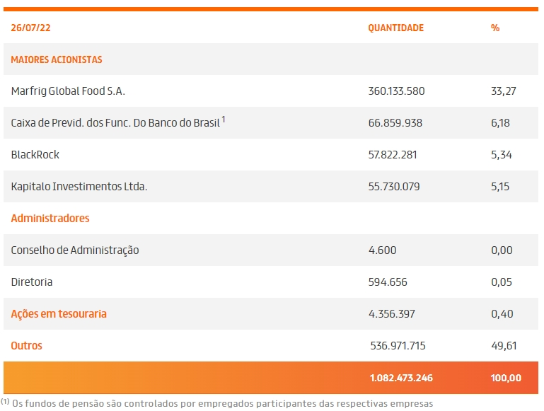
Fonte: (BRF, https://ri.brf-global.com/governanca-corporativa/composicao-acionaria/)
Remuneração dos administradores
Remuneração vinculada a lucros e valor das ações
Incentivo: opções para comprar ações a preços de barganha
Incentivo: emprego
Incentivo: participação nos lucros
Controle da empresa
Ameaças de take-over e demissão da administração
Comportamento de investidores (bancos, fundos de investimentos e acionistas)
Remuneração em empresas concorrentes
Yardstick competition
Públicos de relacionamento (stakeholders)
Stakehorders \(\neq\) Stockholders
Stockholders = é acionista ou credor (debenturista, bancos etc)
Stakehorders = não é acionista ou credor e tem interesse sobre os fluxos de caixa
Stakehorders = Funcionários e sindicatos, clientes e usuários, fornecedores, governos
O Novo Mercado
Níveis diferenciados de governança corporativa criados pela BM&FBovespa
Regras mais rígidas de governança corporativa
Regras mais rígidas reduzem o risco de investidores
Informações mais completas
Administração profissionalizada
Novo Mercado: somente ações com direito a voto (ON)
Figura 1.11: Principais diferenças entre os segmentos especiais de listagem do mercado de ações na BM&FBOVESPA
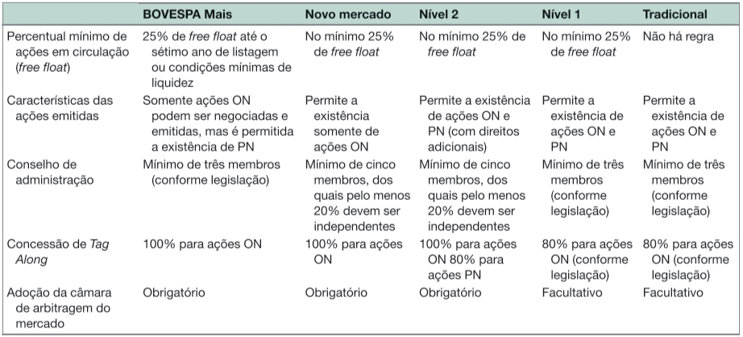
Fonte: (Ross et al. 2013i, pg.16)
1.6 Mercados financeiros e a Empresa
S.A. – transferência rápida de propriedade (liquidez)
S.A. – limitada responsabilidade do investidor
S.A. – ampliação da capacidade de financiamento
S.A. – regulação rígida na divulgação de informações (DRE, BP e relatórios)
Mercado de Capitais
Mercados primários
A empresa recebe recursos no lançamento de ações
IPO, novas ações e chamada de capital são exemplos
Ofertas devem ser registradas na CVM
Mercados secundários
A empresa não recebe recursos de forma direta
São importantes, pois oferecem liquidez: possiblidade de compra
As ações balizam e influenciam os mercados financeiros e o crédito da empresa
Mercados de balcão (dealers) versus mercado de bolsa (auction markets)
Over the counter (OTC)
A maioria das negociações de títulos de dívida ocorre nesse mercado
As corretoras são os grandes agentes desse mercado
As corretoras interligadas constituem um mercado paralelo ou mercado de balcão
Negociação de títulos de empresas
NASDAQ – mercado de balção eletrônico de corretoras de valores no EUA
NASDAQ tem duas vezes o número de empresas que a NYSE
Nesse mercado de balcão as empresas são menores e menos ativas
O valor de mercado das ações da NASDQ é inferior ao da NYSE
Enorme mercado de OTC para dívidas
Muitos mercados são criados dentro de bancos para seus clientes
Listagem em bolsa
Quantas e quais empresas estão na NYSE?
Quantas e quais empresas estão na BM&FBovespa?
Quantas e quais empresas estão na NASDAQ?
1.7 Resumo e conclusões
1 – Orçamento de capital, estrutura de capital e administração do capital circulante.
2 – Maximizar o valor da empresa e do patrimônio dos acionistas.
3 – SA é uma forma superior de organização dos negócios (transferência de propriedade e responsabilidade limitada dos acionistas/quotistas/investidor).
4 – Existem conflitos variados entre acionistas, conselheiros e administradores.
5 – Mercados financeiros são importantes para as empresas, em particular para as SA.